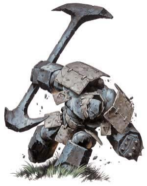

大型构装生物 (跨位面)

| 生命骰： | 2d10+30 (41 hp) |
| 先攻： | +2 |
| 速度： | 40 英尺（不能奔跑） |
| 防御等级： | 25 (�C1 体型，+1 敏捷，+8 精制全身铠甲，+7 天生)，接触 10，措手不及 24 |
| 基本攻击／擒抱： | +1/+10 |
| 攻击： | 精制双头剑 +5 近战，或挥击 +6 近战 |
| 全力攻击： | 精制双头剑 +5 近战 和 +5 近战，或挥击 +6 近战 |
| 伤害： | 精制双头剑 2d6+5/19�C20 和 2d6+2/19�C20，挥击 1d8+7 |
| 面宽／触及： | 10 英尺/10 英尺 |
| 特殊攻击： | 重碾 |
| 特殊能力： | 构装生物特性，移植部件，快速修复，法术抗力 14 |
| 豁免： | 强韧 +0，反射 +2，意志 +0 |
| 属性： | 力量 20，敏捷 15，体质 ―，智力 13，感知 11，魅力 12 |
| 技能： | 工艺（锻造） +6，工艺（石匠） +10*，威吓 +6，知识（建筑与工程学） +10*，聆听 +7，专业（攻城技师） +5，专业（士兵） +5，侦察 +7，生存 +5 |
| 专长： | 警觉（奖励），双武器格斗 |
| 地域： | 任意陆地和地下 (修罗场) |
| 组织： | 单独，小队（4�C7），战团（2�C4 莫格石像 加上 4�C9 大地精），或连队（10�C40 莫格石像 加上 每 5 个莫格石像 1 位 1 或 2 级的士官，2�C4 名 3 至 6 级的尉官，1 名 7 至 10 级的指挥官，以及 20�C50 大地精） |
| 挑战等级： | 3 |
| 宝物： | 一半标准 |
| 阵营： | 通常守序中立 |
| 进化： | 按角色职业 |
| 等级调整： | +3 |
莫格石像是永不疲倦、寻求战斗的士兵。这些来自修罗场的构装生物被用作跨越位面战场的完美雇佣兵，因为它们对雇主保持坚定不移的忠诚且在战斗中无所畏惧。莫格石像为任何愿意满足它们要价的雇主服务，它们不会为是非问题困扰自己。
莫格石像是笨重的石质构装生物，站立时超过 9 英尺高，体重近 1,500 磅。它们钢灰色的身躯由修罗场冷酷的岩石切割成巨大的人形。大多数莫格石像携带在其家园位面的严酷铸造厂锻造的超大型双头剑，并穿着同样出处的沉重铁胸甲。许多莫格石像经过石头和金属移植部件的改造。
位面学者们推测莫格石像最初是作为两个失落已久的帝国间一场古老战争中的突击部队。最终，一方或双方发现了将莫格石像运送到修罗场第二层图尔丹宁（Thuldanin）的方法，那是所有战争的残骸垃圾场。最初作为囚犯被运送到图尔丹宁，莫格石像最终将该层界变成了它们的堡垒。第一批被放逐到那里的莫格石像利用从它们的创造者那里窃取的知识制造了更多的莫格石像。这些远古莫格石像被其同类称为图卡（Thulkarr），它们统治莫格石像至今。图卡和其他莫格石像施法者拥有前往其他位面的能力，它们有时会使用异界传送或异界之门召唤小队和中队的莫格石像，在多元宇宙各处的冲突中作战。
由于莫格石像是无生命的构装生物，除非在战斗中被摧毁否则不会死亡，许多这样的雇佣兵在主物质位面逗留数个世纪，寻找战争来赋予其存在意义。
莫格石像会说通用语、龙语和巨人语。
无论是以粉碎性的碾压滚过战场，还是挥舞致命的双头剑在敌阵中旋转杀戮，莫格石像都是势不可挡的毁灭巨轮。莫格石像将每一次对抗视为战争中的一场战役，因此它们总是按照为战场制定的计划战斗。如果它们提前知晓冲突地点，便会建造陷阱、挖掘壕沟，并试图控制战斗的流向以获取最佳优势。
重碾 (Pulverize) (Su)：每日三次以一个标准动作，莫格石像可以触碰一个物体，并在 1d4 轮内使其失去硬度（强韧 DC 18 则无效）。此能力可以影响体积不超过 1,000 立方英尺的物体（一个 10 英尺立方体）；如果物体更大，则仅影响其 10 英尺立方体部分。无人看管的非魔法物体不进行豁免检定。如果生物持握、穿戴或携带该物体，莫格石像必须成功进行一次近战接触攻击。此攻击不会引发借机攻击。许多莫格石像战士会学习精通破武专长以在对抗危险敌人时使用此能力。
构装生物特性 (Construct Traits)：莫格石像免疫影响心灵效果、毒素、睡眠、麻痹、震慑、疾病、即死效果、死灵效果以及任何需要强韧豁免的效果，除非该效果同样对物体生效。它们不会受到重击、非致命伤害、属性伤害、属性吸取、能量吸取或是巨创即死的影响。莫格石像无法自我治疗，但可通过修复进行治疗。它无法被复活或复生。莫格石像拥有黑暗视觉（60 英尺范围）。
快速修复 (Rapid Repair) (Ex)：一个进行 1 小时充分休息的莫格石像，只要它具有至少 1 点生命值，便可修复 1 点伤害。快速修复不会让莫格石像再生或重新接上失去的身体部分。
角色可以通过一次工艺（石匠）检定（DC 15）来协助莫格石像的自我修复。如果检定成功，莫格石像在每小时的休息中修复 2 点生命值。为莫格石像提供援助对协助角色而言算是轻度活动，且一个角色一次只能协助一名莫格石像。莫格石像无法协助其自身的修复。
移植(Grafts) (Ex)：当莫格石像在修罗场位面被创造时，它们常常会被装备上特殊的移植部件。这些移植部件在附录2的莫格石像移植部件部分有描述。一个没有职业等级的莫格石像可以拥有价值最多 2,000 gp 的莫格石像移植部件。一个拥有职业等级的莫格石像可以用其积累的财宝购买额外的移植部件。
技能：莫格石像获得的技能如同它们是异界生物。*由于其天生对机械和工程学的理解，莫格石像在工艺（石匠）和知识（建筑与工程学）检定上拥有+4种族加值。
尽管为战争而造，莫格石像彼此并不交战。出于偶然而非刻意设计，莫格石像有时会发现自己处于冲突的对立方。这样的战争伤亡异常惨重，因为莫格石像会率领它们的军队反复冲撞，直至一方或双方被彻底碾碎。之后，莫格石像们可能会联合起来投入一场新的战争，仿佛它们从未彼此敌对过。
图卡Thulkarr统治着莫格石像是因为它们创造了大部分莫格石像，并且它们是其种族中最古老也最强大的存在。莫格石像给予图卡士兵对将军般的敬意，但图卡尽管强大，却极少下达命令。在图卡看来，它们的种族存在于战场上为他人效力，而图卡只是尽力为其同类争取尽可能好的雇佣条件。雇佣一名莫格石像佣兵通常每天花费约 5 gp，外加莫格石像每职业等级 2 gp；莫格石像更偏爱稀有矿石和魔法物品作为报酬，并需预付。
莫格石像几乎擅长所有职业，但其偏好职业是战士。莫格石像牧师和德鲁伊非常罕见，因为它们是无魂的造物且不属于自然世界的一部分。由于其众多特殊能力，一个莫格石像玩家角色的有效角色等级（ECL）等于其职业等级 + 5。因此，一名 1 级莫格石像战士的 ECL 为 6，相当于一名 6 级角色。一名莫格石像角色的法术抗力等于其职业等级 + 14。
建造 (CONSTRUCTION) 只有图卡了解创造莫格石像的秘密，但流言持续指出古老的废墟可能隐藏着描述该过程以及将整个种族放逐至修罗场的仪式的古老石板。除了知晓秘密仪式外，创造一个莫格石像需要 10,000 gp 和 500 XP；图卡提供莫格石像佣兵的服务，其明确目的就是为创造更多同类筹集必要资金。